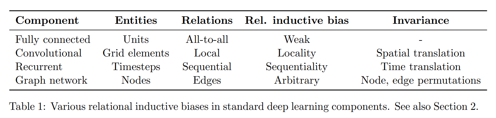
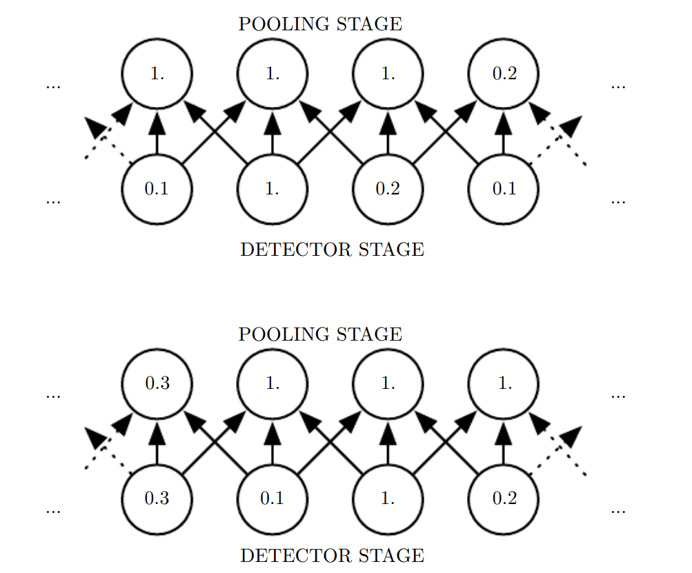
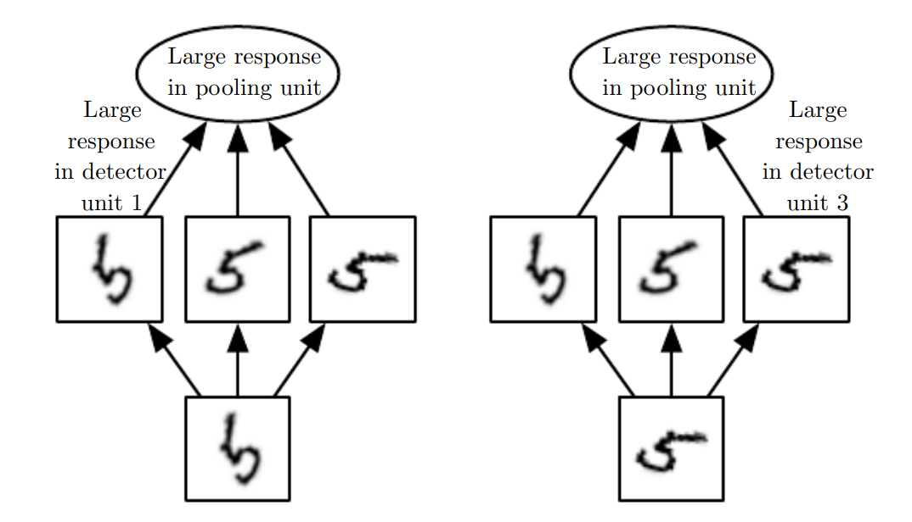
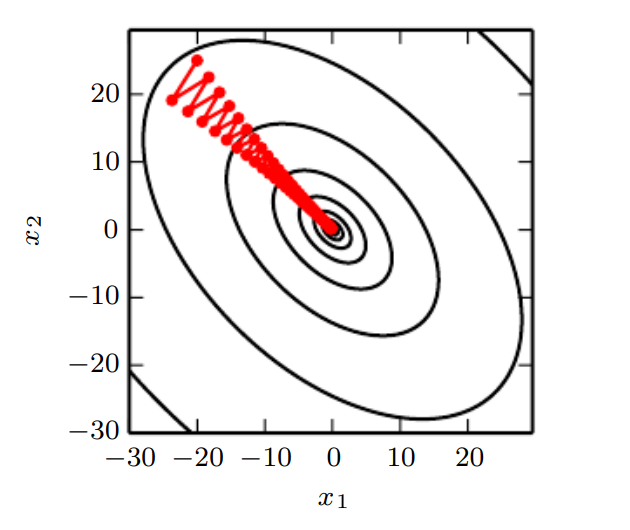
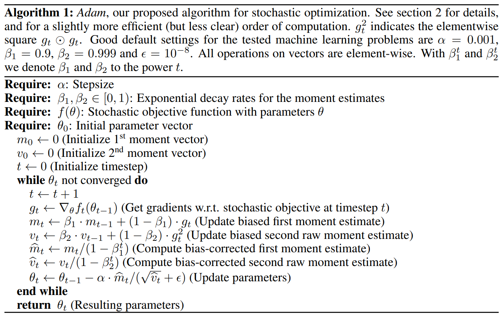
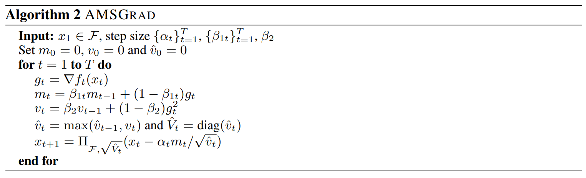
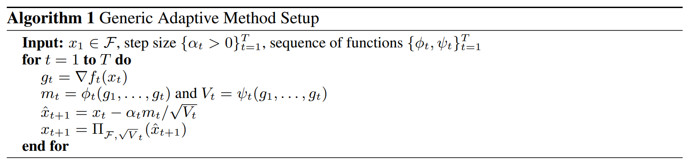
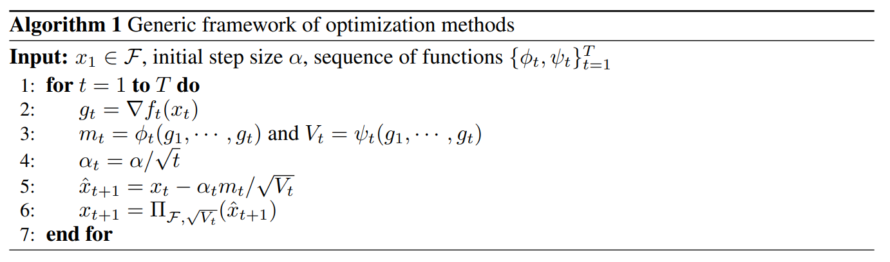
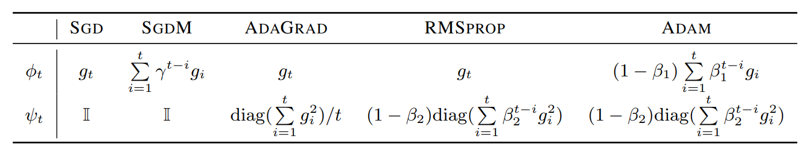

神经网络
为什么使用 sigmoid 函数
见博客
梯度消失 / 梯度爆炸 / 欠拟合 / 过拟合
防止梯度消失 / 爆炸的方式
- Batch Normalization / Layer Normalization
防止过拟合
- Dropout
- Regularization (ML)
inductive bias
归纳偏置, 表示模型在训练前做出的一些偏好(假设), 方便模型搜索出有特征的解
可以加快模型收敛, 并增强小数据集上的泛化能力
CNN
CNN 的 inductive bias:
-
locality
因为卷积这个操作本身就是对某个局部内的像素计算, 所以 CNN 能更好地注意到局部特征
-
translation equivariance
即一个特征无论出现在图像的哪个部位, 都能被同一卷积核注意到
RNN
相对于 CNN 的空间, RNN 是时间上的归纳偏置
GNN
就是图拓扑结构上的归纳偏置

具体见 [1]
CNN
structure
pooling
一个 CNN 层一般分为三步
- 卷积
- 激活函数
- 池化
池化可以让输出对输入上的微小变化不做反应

如图, 可以看到输入全变, 但是本质上是修改了右边的元素, 在整体向右循环平移
而输出只变化了两个
同时如果对不同参数的卷积结果做池化, 可以学习对某一种变换变得无反应
例如下图的例子中, 池化单元对于旋转操作无反应:

假设图中每个卷积核对于与自己方向相同并且形状重合的输入反应很大
那么最后的池化单元能够识别旋转后的 \(5\)
同时池化还可以用于降采样, 降低计算复杂度, 或者用于适应模型维数
RNN
structure
一个 RNN 使用共享参数矩阵 \(W_h, W_x, W_y\)
每一步接受一个输入 \(x_t\), 维数为 \(d\)
这个输入可以是 embedding 后的单词
使用如下公式迭代处理整个单词序列:
其中 \(b_h,b_y\) 是偏置项
LSTM
为了处理 RNN 长序列导致的梯度消失 / 爆炸问题
使用三个门控单元:
-
遗忘门
决定保留多少上一时刻细胞状态的信息
\[f_t=\sigma(W_f\cdot [h_{t-1}, x_t]+b_f)\] -
输入门
决定有多少输入信息要进入细胞状态
\[i_t=\sigma(W_i\cdot [h_{t-1}, x_t]+b_i)\] -
输出门
决定当前细胞状态有多少输出给隐藏状态
\[o_t=\sigma(W_o\cdot [h_{t-1}, x_t]+b_o)\]
同时维护一个细胞状态 \(C_t\):
这里 \(\tilde C_t\) 表示候选值, 是从上一步隐藏值 \(h_{t-1}\) 和当前输入 \(x_t\) 中提取的新信息, 由 \(i_t\) 决定有多少流入当前细胞状态
所以更新细胞状态:
最后更新隐藏状态:
这里面 \(C_t\) 相当于一个传送有效信息的线性链
链式法则里会出现多个 \(\frac{\partial C_t}{\partial C_{t-1} }\), 而这个梯度为
后面一项是低阶项
如果我们希望不遗忘, 那么学习到的 \(f_t\approx 1\), 可以解决梯度消失
GRU
与 LSTM 类似
使用两个门控单元:
-
更新门
决定当前时间步的隐藏状态需要保留多少前一时间步的信息以及加入多少新信息
\[u_t=\sigma(W_u\cdot [h_{t-1},x_t]+b_u)\] -
重置门
决定前一时间步的隐藏状态对当前候选隐藏状态的影响程度, 越接近 \(0\), 表示忘记更多历史信息
\[r_t=\sigma(W_r\cdot [h_{t-1},x_t]+b_r)\]
随后更新隐藏状态:
同样对隐藏状态求导有
后面也是低阶项
前面令 \(u_t\approx 0\), 即表示不忘记, 记住信息, 可以解决梯度消失
GNN
这篇文章 [2] 讲得好
transformer
见博客
optimizer
SGD
随机梯度下降
由于实际计算梯度需要采样 \(m\) 次, 将每次的损失求平均
所以计算量比较大
一个想法就是每次只采样一次
这样得到的损失在期望上与求平均值是一样的
SGD 的优点是一定会收敛到局部极小值, 缺点是慢
收敛证明
统一的分析方法见 blog
假设梯度有界, 变量有界
如果函数 \(f_t(\theta)\) 是凸函数, 那么有
考虑一个后悔值
即第 \(t\) 个参数 \(\theta_t\) 与最优参数 \(\theta^{* }\) 之间的差的求和
当 \(\lim_{T\to\infty} R(T)/T= 0\) 时认为算法收敛
把 \(\theta_t,\theta^{* }\) 代入凸函数性质:
所以
同时由于
所以
前一部分错位相减:
由于前面假设梯度有界
且
所以原式
此时假设 \(\alpha_t=t^{-p}\)
前一部分 \(/T\) 得到 \(t^{(p-1)}\)
所以只要 \(p<1\) 就收敛到 \(0\)
后一部分 \(/T\) 得到 \(\displaystyle \frac{\sum_{t=1}^Tt^{-p}}{T}\)
那么我们断言
实际上, 我们取 \(N_0\geq \frac{1}{\epsilon^{1/p} }\), 即 \(N_0^{-p}\leq \epsilon\)
对于 \(t\leq N\), \(\sum_{t=1}^N t^{-p} / T\to 0\)
可以找到一个 \(N_1\) 使得 \(\sum_{t=1}^{N_1} t^{-p} / T \leq \epsilon\)
那么取 \(N=\max(N_0,N_1)\)
对于 \(t>N\), 我们有 \(t^{-p}\leq \epsilon\)
所以原式:
收敛速度
要想看到他有多慢, 可以看下面的图:

给两个矩阵小知识:
Poor conditioning
考虑函数 \(f(x)=A^{-1}x\)
对于矩阵 \(A\) 的 condition number 等于特征值的最大最小之比
这个 condition nubmer 越大, 函数 \(f(x)\) 对于输入 \(x\) 的变化越敏感
即 \(x\) 一个小的变化可能引起 \(f(x)\) 变化很大
Hessian matrix
向量函数 \(f: \mathbb R^n\to \mathbb R^m\) 的一阶偏导组成的矩阵为 Jacobian matrix , 记作 \(J(f)_{m\times n}\)
典型的应用是多元函数积分换元:
标量函数的二阶偏导组成的矩阵为 Hessian matrix, 记作 \(H(f)_{n\times n}\)
他们两个的关系是:
即多维标量函数的 Hessian matrix 为函数梯度的 Jacobian matrix
上面图片中函数的 Hessian matrix 的 condition number \(= 5\)
所以 SGD 对于 \([-1,1]^T\) 方向的梯度不敏感, 对于 \([1,1]^T\) 方向的梯度敏感, 所以看起来一直在撞墙, 而没有很快地下降到谷底
Momentum SGD
为了加速收敛设计出来的
定义一个速度矢量 \(v\)
它指代参数在参数空间中移动的速率与方向
在参数使用单位质量时, 速度 \(v\) 就是动量, 所以是这个叫法
定义一个超参数 \(\alpha\in [0, 1)\)
更新规则:
把负梯度看作一个力, \(\epsilon\) 看作一个调整单位的参数
所以第一个式子就是冲量转成动量
第二个式子是单位时间的距离变化
于 SGD 相比:

可以看到负梯度中沿着 \([1,1]^T\) 方向的分量在每次更新 \(v\) 时都会相互抵消, 而沿着 \([-1,1]^T\) 方向的分良在每次更新 \(v\) 时会一直累积
所以朝着谷底运动的速度越来越快
形式化地, 要想求出最大的最终速度, 考虑运行过程, 速度会沿着负梯度的方向加速, 最后的收敛到连续几步内的梯度都是相同的大小与方向
如果从第一步开始采样得到的梯度都为 \(g\), 那么最终的最大速度是
相比于无 Momentum 的 SGD 加速的 \(\frac{1}{1-\alpha}\) 倍
nature
本质是在通过数值模拟求解一阶微分方程组:
其中取单位质量, 所以 \(f(t)=a(t)\)
同时 \(\theta(t)\) 是位移
数值模拟解微分方程组的一个方法是 Euler 方法, 即模拟取每个梯度方向的一小步来计算
这正是 Momentum SGD 在做的事
具体地, 取一个主动力为负梯度, 在取一个被动力, 通过系数 \(\alpha\) 正比于 \(-v(t)\)
这个被动力可以看作粘滞力, 因为正比于 \(v\), 而不像动摩擦力不与 \(v\) 相关, 或者空气阻力正比于 \(v^2\)
Nesterov Momentum SGD
迭代公式为
即在采样梯度前先将当前速度应用于位移 \(\theta\)
对于 convex batch gradient 有显著速度提升, 但是对 stochastic gradient 没有理论保证的提升
adaptive learning rate optimizer
上面的几个算法学习率 \(\epsilon\) 都是固定的
下面介绍几个自适应学习率的算法
AdaGrad
通过累积的平方梯度来调节学习率, 使收敛更稳定
给定静态学习率 \(\epsilon\) 和防止除零异常的小常数 \(\delta \approx 10^{-7}\), 迭代公式为:
在凸优化中有理论优势, 但实际训练神经网络往往导致学习率过早过大衰减, 因为有时函数是非凸的
收敛证明
与 SGD 收敛证明类似
同样假设凸函数, 假设梯度收敛到 \(0\)
可以写出
前一部分 \(/T\) 为
后一部分 \(/T\) 为
RMSProp
为了使得 AdaGrad 在非凸场景下效果更好, 将学习率改成指数级衰减
在非凸场景下, 函数可能在某些邻域内形成一个局部凸壳
AdaGrad 由于考虑了整体的 history, 可能在没到达局部凸壳之前经过了一段梯度很大的坡, 导致学习率衰减变得很小
RMSProp 的指数级衰减让学习率能够遗忘过远的 history
给定学习率衰减速率 \(\rho\), 更新规则为:
可以看到与 AdaGrad 区别在 \(r\) 和 \(\frac 1 {\sqrt{\delta + r} }\) 上
还有一个带 Nesterov Momentum 的 RMSProp:
Adam
algorithm

可以看作 RMSProp 与 Momentum 的一个结合, 只不过与上面的 Nesterov Momentum 版本有区别
给定几个参数 \(\rho_1=0.9,\rho_2=0.999,\epsilon=0.001,\delta=10^{-8}\)
迭代公式为:
initialization bias correction
对于 \(v_t\) 有
求一阶矩 \(\mathbb E[v_t]\) 与梯度二阶矩 \(\mathbb E[g_t^2]\) 的关系
其中当 \(\mathbb E[g_i^2]\) 不变时, \(\zeta=0\)
否则 \(\zeta\) 会是一个很小的值, 因为可以合理选择 \(\beta_2\in[0,1)\) 使得 \(v_t\) 被更远的梯度影响很小, 所以 \(\mathbb E[g_i^2]\) 更接近 \(\mathbb E[g_t^2]\)
convergence
Lemma 1 凸函数性质
\[\lambda f(x)+(1-\lambda) f(y)\geq f(\lambda x + (1-\lambda y))\]Lemma 2 凸函数性质, 另一种表达
\[f(y)\geq f(x)+\nabla f(x)^T(y-x)\]Lemma 3
令 \(g_t=\nabla f_t(\theta_t)\), \(||g_t||_2\leq G\), \(||g_t||_\infty\leq G_\infty\), \(g_{1:t,i}=[g_{1,i},\cdots,g_{t,i}]\), 那么
\[\sum_{t=1}^T\sqrt{\frac{g_{t,i}^2}{t} }\leq 2G_\infty||g_{1:T,i}||_2\]
Lemma 4
令 \(\gamma=\frac{\beta_1^2}{\sqrt{\beta_2} }<1\), 且 \(||g_t||_2<G\), \(||g_t||_\infty<G_\infty\), 那么
\[\sum_{t=1}^T\frac{\hat m_{t,i}^2 }{\sqrt{t\hat v_{t,i} } }\leq \frac{2}{1-\gamma}\frac{1}{\sqrt{1-\beta_2} }||g_{1:T,i}||_2\]
我们假设 \(\alpha_t\) 随着时间呈 \(t^{-1/2}\) 速率衰减, \(\beta_{1,t}\) 随着时间呈 \(\lambda^t\) 速率衰减, \(\lambda=1-10^{-8}\)
同时参数间的距离有界, 即 \(||\theta_n-\theta_m||_2\leq D, ||\theta_n-\theta_m||_\infty\leq D_\infty\) 对于任意 \(m,n\in \set{1, \cdots, T}\) 成立
那么
Theorem 5
假设 \(\alpha_t=\frac{\alpha}{\sqrt t}\), \(\beta_{1,t}=\lambda^{t-1}\), 且 \(\gamma<1\), 那么
\[R(T)\leq \frac{D^2}{2\alpha(1-\beta_1)}\sum_{i=1}^d\sqrt{T\hat v_{T,i} }\]\[+\frac{\alpha(1+\beta_1)G_\infty}{(1-\beta_1)\sqrt{1-\beta_2} (1-\gamma)^2}\sum_{i=1}^d||g_{1:T,i}||_2\]\[+\sum_{i=1}^d\frac{D^2_\infty G_\infty\sqrt{1-\beta_2} }{2\alpha(1-\beta_1)(1-\lambda)^2}\]
这是原文给出的定理, 可惜他是错的
non-convergence
具体见 blog
AMSGrad

可以看到与 Adam 的区别就是 \(\hat v_t\) 与过去取了一个最大值
在 Adam 中, 由于 \(v_{t,i}=\beta_2v_{t-1,i}+(1-\beta_2)g_{t,i}^2\)
所以当 \(v_{t-1,i}>g_{t,i}^2>0\) 时 \(v_{t,i}<v_{t-1,i}\)
那么学习率可能会增大
但是 AMSGrad 取最大值可以保证 \(\frac{\sqrt{\hat v_t,i} }{\alpha_t}\) 单调不减, 那么学习率就是单调不增的
convergence
<!-- > Theorem 1
对于 \(\alpha_t=\alpha/\sqrt t\), \(\beta_{1,t}\leq \beta_1\) 以及 \(\gamma = \beta_1/\sqrt \beta_2<1\)
且梯度与参数距离有界
那么
\[R(T)\leq \frac{D_{\infty}^2\sqrt T}{\alpha(1-\beta_1)}\sum_{i=1}^d\hat v_{T,i}^{1/2}\tag{1.1}\]\[+\frac{D_\infty^2}{(1-\beta_1)^2}\sum_{t=1}^T\sum_{i=1}^d\frac{\beta_{1,t}\hat v_{t,i}^{1/2} }{\alpha_t}\tag{1.3}\]\[+\frac{\alpha\sqrt{1+\log T} }{(1-\beta_1)^2(1-\gamma)\sqrt{1-\beta_2} }\sum_{i=1}^d||g_{1:T,i}||_2\tag{1.2}\]
\(\underline{证明}\)
按照 Online Convex Programming 的统一分析方法来做
还是先把 \(x_{t+1}\) 按更新规则展开
所以把 \(||\hat V_t^{1/4}(x_{t+1}-x^{* })||^2\) 展开
所以整理得到
后一项用了 \(\braket{a,b}\leq ||a||\cdot ||b||\) 与 \(ab\leq (a^2+b^2)/2\) 把 \(\frac{\beta_{1,t} }{1-\beta_{1,t}}\braket{m_{t-1},x_t-x^{* } }\) 展开成 \((6.2'),(6.3)\)
(\(\alpha_t\) 是凑进去的)
其实是柯西不等式和杨氏不等式
那么由于 \(\hat v_{t,i}\geq \hat v_{t-1,i}\)
所以中间两项合并变成
Lemma 2
\[\sum_{t=1}^T\alpha_t||\hat V_t ^{-1/4}m_t||^2\leq \frac{\alpha\sqrt{1+\log T} }{(1-\beta_1)(1-\gamma)\sqrt{1-\beta_2} }\sum_{i=1}^d||g_{1:T,i}||_2\]
\(\underline{证明}\)
将求和最后一项按照更新规则展开
依次把所有的项都展开
常数提出来:
对于 \(\sum_{t=1}^T\frac1{\sqrt t}\sum_{j=1}^t\gamma^{t-j} |g_{j,i}|\), 换顺序求和:
所以原式
对于每个 \(|g_{t,i}|\), 将 \(\frac 1{\sqrt t}\) 放缩到 \(\sqrt{\sum_{t=1}^T\frac{1}{t} }\):
并且 \(\sqrt{\sum_{t=1}^T\frac{1}{t} }\leq \sqrt{1+\int_{1}^T[1/t]\text dt}\leq \sqrt{1+\log T}\)
所以成立
\(\blacksquare\)
这个引理的最后一步实际对应了 Adam 的引理 3, 只不过把 \(G_\infty\) 换成了 \(\sqrt{1+\log T}\)
回到定理, 对于 \((2.1)\), 错位相减得到
这里 \(\hat v_{T,i}^{1/2}=||\hat V_{T,i}^{1/4}||^2\) 展开:
参数之差放缩到 \(D_\infty\), 有
即
与 \((1.1)\) 对应
对于 \((2.3)\), 由于
所以
与 \((1.3)\) 对应
\(\blacksquare\)
Corollary 1
如果 \(\beta_{1,t}=\beta_1\lambda^{t-1}\), 那么
\[R(T)\leq \frac{D_{\infty}^2\sqrt T}{\alpha(1-\beta_1)}\sum_{i=1}^d\hat v_{T,i}^{1/2}+\frac{\beta_1D_\infty^2G_\infty}{(1-\beta_1)^2(1-\lambda)^2}+\frac{\alpha\sqrt{1+\log T} }{(1-\beta_1)^2(1-\gamma)\sqrt{1-\beta_2} }\sum_{i=1}^d||g_{1:T,i}||_2\]
\(\underline{证明}\)
由于 \(\hat v_{t,i}^{1/2}\leq G_\infty\)
由于
所以原式有
下面的 \(\alpha\) 也是常数, 不用在意
\(\blacksquare\) -->
具体见 Adam and AMSGrad
summary
定义几个符号:
\(\mathcal F\) 表示参数空间
\(S^d_{+ }\) 表示正定的 \(d\times d\) 矩阵空间
\(\Pi_{\mathcal F, A}(y)=\text{argmin}_{x\in \mathcal F}||A^{1/2}(x-y)||,y\in \mathbb R^d, A\in S^d_{+ }\) 投影操作表示在以 \(\sqrt V_t\) 为缩放比例缩放后的 \(\mathcal F\) 空间内找出一个与目标参数 \(y\) 最相近的
那么平均函数 \(\phi_t:\mathcal F^t\to \mathbb R^d\)
方差函数 \(\psi_t:\mathcal F^t\to S^d_{+ }\)
那么统一的自适应算法为:

这里 \(V_t=\text{diag}(v_t)\), 指的是把 \(v_t\in\mathbb R^d\) 向量的每个元素放到 \(V_t\in S^d_{+ }\) 矩阵的对角线上, 目的是与 \(m_t\) 做逐元素 (element-wise) 的除法, 即 \(m_{t,i} \times V^{-1}_{t,i,i},i=\set{1,\cdots,d}\)
如果特定了 \(\alpha_t=\alpha/\sqrt t\):

所有算法的 \(\phi_t,\psi_t\) 可以整理到表格里:

其中 SGD 的 \(\psi_t=\mathbb I\) 是恒等变换
Adam 的 \(\alpha_t\) 是 \(\alpha\cdot\sqrt{1-\beta_2^t}/(1-\beta_1^t)\)
second order optimizer
下面补充几个二阶的方法
Newton's method
就是牛顿迭代法
我们考虑误差函数
利用泰勒展开:
\(H\) 是黑塞矩阵, 即二阶导
那么由优化版的二阶牛顿迭代法, 我们更新的步长为:
算法迭代公式为:
conjugate gredient method
BFGS
这俩不具体介绍了, 具体见 Deep Learning 的第 8 章
Batch Normalization
对于深层的神经网络, 一次可能会同时更新好几个层
例如一个每层只有一个单元的神经网络, 输出为
即每一层的边权相乘
这样如果使用 \(w\leftarrow w-\epsilon g\) 更新每一层, 更新后的结果为
其中 \(g_i=\nabla_{w_i}y=\prod_{j\not=i}w_j\)
可以看到新的 \(y\) 中, 如果 \(x\) 变化为 \(1\), 只包含一个 \(g_i\) 的项为 \(\epsilon g_i\times \prod_{j\not=i}w_j=\epsilon g_i^2\)
所以总的变化量为 \(\epsilon g^Tg\), 其中 \(g=[g_1,\cdots,g_l]\)
所以要想让 \(y\) 也变化 \(1\), 只需让 \(\epsilon=\frac 1{g^Tg}\)
但是对于包含 \(2\) 个及以上个 \(g_i\) 的项, 其中也含有 \(\prod w_i\) 项
但是这些项可能由于 \(w_i<1\) 变得极小, 或者 \(w_i>1\) 变得极大, 导致梯度消失 / 爆炸
所以学习率不好选择
同时由于梯度 \(g_i=\prod_{j\not=i}w_j\), 所以更新后的参数 \(w_i'\) 与其他参数产生耦合, 会比较麻烦
定义一个 design matrix \(H\) 中, 每个神经元的输出组成一行, 一共 \(m\) 行, \(m\) 为 mini-batch 的大小
我们对其进行归一化:
即
其中 \(\mu\) 是一个包含所有神经元输出平均值的向量, \(\sigma\) 是包含所有神经元输出标准差的向量
具体地
这样能够让每一层输出都服从平均值为 \(0\), 方差为 \(1\)
但这样的归一化可能导致模型表达能力下降
我们可以用 \(\gamma H'+\beta\) 代替 \(H'\) 作为每一层的输出
参数 \(\gamma, \beta\) 可以让输出的平均值与方差为任意值
这种先归一化再改变平均值和方差的操作其实不是冗余的
归一化消除了平均值与方差对其他层的依赖, 然后再用参数来提高模型表达能力
新的输出的均值与方差仅由 \(\gamma, \beta\) 控制, 使得其更容易学习
有一个问题, 我们应该对输入 \(x\) 做 \(BN\), 还是对 \(Wx+b\), 即激活值做 \(BN\)?
答案是后者更好
因为输入 \(x\) 通常是某个非线性激活函数的输出, 即 \(\text{sigmoid,ReLU}\) 等
所以其统计特性更不符合高斯分布, 也不容易用线性变换标准化
具体地, 我们对激活函数传入的是 \(BN(Wx)\)
省略了 \(b\), 因为 \(b\) 的效果与 \(\beta\) 相同
同时, 在推理时, 由于推理没有 batch, 所以 BN 需要维护一个 running average
定义 \(\mu_{running}, \sigma_{running}\)
对于每一层 \(i\), 每一批次 \(B\) 的 \(\mu_{i,B},\sigma_{i,B}\), 我们有
其中 \(\lambda\) 为动量参数, 通常取 \(0.9-0.99\)
这样推理时每一层直接用 \(\mu_{running}, \sigma_{running}\) 来计算
Layer Normalization
上面说的 Batch Normalization 在前馈神经网络中效果很好, 不过这是因为前馈神经网络的每一层 BN 输入都是前面神经元的输出的线性组合
前面神经元的输出是 BN 后输入激活函数后的值, 由于每次 BN 都输出一个标准化的结果, 且每次只依赖上一层的输出, 所以不同层的统计量分布类似
这使得 running average 有意义
如果是 RNN, 每一步依赖于前面所有层的隐藏层状态, 因为是递归地迭代
所以时间步不同, 统计量分布可能差异很大
那么上面说的 BN 要使用 running average 做推理, 但是由于统计量差异大, 所以 running average 不再有意义
同时 BN 不能用于在线学习
因为在线学习一般 batch = 1
而且需要训练的同时实时推理, 不能用 running average
所以 LN 对这一层的所有神经元输出做标准化
对于上面的输出 \(H_{i,j}\):
其中 \(n\) 是神经元数量, 即输入 \(x\) 的维数
对于 RNN, 更新隐藏状态的式子:
其中 \(\alpha_t=W_h\cdot h_{t-1}+W_x\cdot x_t\)
变成:
其中 \(\gamma, \beta\) 与 BN 作用相同
residual connection
ResNet的理论优势：从恒等映射到优化景观的深层解析
ResNet作为深度学习领域的里程碑式架构，自2015年提出以来已获得超过10万次引用，成为现代神经网络设计的基础范式。尽管原始论文《Deep Residual Learning for Image Recognition》主要从实践角度论证了其有效性，但后续研究已从多个理论视角提供了严格的数学证明，揭示了残差连接如何解决深层网络的梯度消失问题、提升优化效率并增强泛化能力。这些理论分析不仅解释了ResNet的成功原因，还为后续深度神经网络设计提供了理论指导，使其成为连接经验性成功与理论理解的桥梁。
一、梯度流动的数学本质：恒等映射与加法梯度传递
ResNet的核心创新在于引入恒等映射作为跳跃连接的基础，这彻底改变了梯度在深层网络中的流动方式。传统深层神经网络在反向传播时，梯度需要经过每层权重矩阵的乘积传递，即梯度表达式为：
当网络深度增加时，若每层的权重矩阵条件数大于1，梯度会呈指数级增长（梯度爆炸）；若小于1，则会呈指数级衰减（梯度消失）。即使加入批归一化（Batch Normalization）等技术缓解这一问题，深层网络（如超过50层）仍会出现难以训练的现象。
相比之下，ResNet的残差块通过恒等映射构建了一个"干净"的梯度传递通道。其数学表达式为：
当选择恒等映射（即 \( h(x_l) = x_l \) 和 \( f(y_l) = y_l \)）时，反向传播梯度分解为：
这一表达式的关键在于，梯度不再以乘积形式传递，而是以加法形式存在。即使残差函数 \( F(x) \) 的梯度趋近于零，梯度传递项至少保持为1，从而避免了梯度消失。《Identity Mappings in Deep Residual Networks》（2016）通过严格的数学推导证明了这一点，并通过反例验证了若跳跃连接采用缩放映射（\( h(x) = \lambda x \)），当 \( \lambda \neq 1 \) 时，梯度会因 \( \lambda \) 的连乘而指数级衰减或爆炸。
梯度传递的加法机制还具有另一重要特性：任何两层间的梯度传递项至少为1。这意味着即使网络非常深，浅层参数也能接收到足够大的梯度信号，确保所有层的权重都能有效更新。相比之下，传统网络中浅层梯度可能因权重矩阵的乘积而趋近于零，导致"负优化"——增加层数不仅没有提升性能，反而恶化了模型表现。
二、优化难度的理论解释：嵌套函数类与训练稳定性
ResNet的另一个关键理论优势在于其构建了"嵌套函数类"（Nested Function Class），确保网络深度增加时性能不会退化。在《Identity Mappings in Deep Residual Networks》中，作者通过理论分析和实验验证了这一观点。
嵌套函数类的构建原理是：假设网络已包含 \( l \) 层，当添加更多层时，这些新增层可以退化为恒等映射（即 \( F(x) \approx 0 \)），此时网络的性能至少与原有 \( l \) 层网络相当。数学上，若网络包含 \( L \) 层，第 \( l \) 层到第 \( L \) 层的输出可表示为：
这意味着深层网络的解空间包含浅层网络的解，为优化提供了"安全通道"。即使某些层未能有效学习，网络仍能保持原有性能，避免了退化现象。相比之下，传统网络的解空间是非嵌套的，增加层数可能导致解空间偏离原有最优解，陷入性能下降的困境。
此外，残差网络的预激活结构（将BN和ReLU置于残差块前）进一步简化了优化过程。这种设计确保了残差函数的输入分布稳定，避免了因ReLU截断负值或权重初始化不当导致的梯度问题。实验表明，预激活结构使网络训练速度更快，收敛更稳定，并减少了过拟合现象。
从动态系统视角看，残差网络的优化过程类似于在参数空间中寻找"平坦盆地"。由于跳跃连接提供了直接的梯度传递路径，优化器能够更有效地探索参数空间，避免陷入尖锐的局部最小值。《Hessian Analysis of Deep Residual Networks》等后续研究表明，ResNet的Hessian矩阵在训练末期呈现低秩特性（大量特征值接近零），这与损失曲面平坦区域的形成直接相关，解释了为什么ResNet能够训练出超过1000层的网络而不出现梯度问题。
三、泛化能力的理论框架：函数表达与统计学习
ResNet的泛化能力优势可通过统计学习理论和函数表达能力两个视角进行解释。
从统计学习理论看，ResNet的嵌套函数类设计使网络在深层时仍能保持较低的泛化误差。根据VC维理论，模型的泛化误差与模型复杂度（如VC维）相关。ResNet通过残差连接构建的嵌套函数类，确保了模型复杂度随深度增加而合理增长，而非指数级膨胀。具体来说，若网络的第 \( L \) 层可表示为第 \( l \) 层的输出加上残差函数之和（\( x_L = x_l + \sum_{i=l}^{L-1} F(x_i) \)），则模型的表示能力随深度线性扩展，而非指数级增长，从而避免了过高的泛化误差。
从函数表达能力看，ResNet通过残差块的加法结构显著增强了网络的表达能力。传统神经网络学习完整的映射函数 \( H(x) \)，而ResNet学习残差函数 \( F(x) = H(x) - x \)。这种设计使网络能够更灵活地逼近复杂函数，因为残差函数往往比完整的映射函数更简单。例如，当目标函数接近恒等映射时（如 \( H(x) = x + \delta \)，其中 \( \delta \) 是微小扰动），ResNet只需学习 \( F(x) = \delta \)，而传统网络需要学习整个 \( H(x) \)。这种设计使ResNet能够更有效地利用参数，提升表达效率。
《Beyond a Gaussian Denoiser: Residual Learning of Deep CNN for Image Denoising》（2017）等研究进一步证明，ResNet的残差学习机制能够捕获图像数据中的高频细节，这些细节对于分类和识别任务至关重要。此外，预激活结构通过规范化输入分布，使网络能够更稳定地学习这些细节，从而提升泛化能力。
四、深度增加的理论收益：函数逼近与特征表达
ResNet的另一个理论优势是深度增加带来的性能提升。传统观点认为，网络越深，表达能力越强，但实验表明，超过一定深度后，网络性能会退化。ResNet通过残差结构解决了这一问题，证明了"更深确实更好"。
从函数逼近理论看，ResNet的深层网络能够逼近更复杂的函数。根据《Deep Residual Learning for Image Recognition》的分析，残差网络的输出可表示为：
若将 \( F(x) \) 视为一个可学习的函数，则 \( H(x) \) 的表达能力是 \( F(x) \) 和 \( x \) 的线性组合。随着网络深度增加，\( F(x) \) 可以由更多层的网络构成，其表达能力随深度线性扩展，而非因梯度问题而受限。
从特征表达角度看，ResNet的深层网络能够提取更抽象的特征。例如，浅层网络主要学习边缘和纹理等低级特征，中层网络学习形状和部件等中级特征，深层网络则学习物体类别等高级特征。残差结构使这些特征能够逐层叠加，而非因梯度消失而被破坏。
实验数据（如在CIFAR-10数据集上的对比）验证了这一理论。《Identity Mappings in Deep Residual Networks》显示，ResNet-152的训练误差仅为VGG-19的一半，且随着深度增加，测试误差持续降低，证明了深度增加带来的性能提升。
五、理论视角的综合：从数学推导到实验验证
ResNet的理论优势可通过以下关键点进行综合：
首先，恒等映射的数学机制是ResNet成功的基础。通过跳跃连接实现的恒等映射确保了梯度在反向传播中的稳定传递，避免了传统网络的梯度消失/爆炸问题。这一机制不仅解决了梯度问题，还为网络提供了一个"安全退化"的通道，确保增加的层数不会恶化模型性能。
其次，预激活结构的优化作用进一步提升了ResNet的训练效率。将BN和ReLU置于残差块前，确保了残差函数的输入分布稳定，减少了因非线性激活函数导致的梯度问题。实验表明，预激活结构使ResNet的训练损失更低，收敛速度更快，且在1001层网络上仍能保持良好性能。
第三，嵌套函数类的设计理念使ResNet能够有效利用深度。这一设计确保了深层网络的解空间包含浅层解，避免了模型退化，并为网络提供了随深度增加而扩展的表达能力。统计学习理论证明，这种设计使网络能够更稳定地逼近目标函数，降低泛化误差。
最后，平坦损失曲面的形成解释了ResNet的泛化能力优势。残差结构通过低秩Hessian矩阵特性，引导优化器收敛到平坦的最小值区域。这些平坦区域对参数扰动不敏感，因此具有更好的泛化性能。实验显示，ResNet的测试误差随着深度增加而持续降低，验证了这一理论。
| 理论视角 | 核心机制 | 数学表达 | 实验验证 |
|---|---|---|---|
| 梯度流动 | 恒等映射的跳跃连接 | \( \frac{\partial \varepsilon}{\partial x_l} = \frac{\partial \varepsilon}{\partial x_L} \cdot \left(1 + \frac{\partial}{\partial x_l} \sum_{i=l}^{L-1} F(x_i) \right) \) | ResNet-152成功训练，梯度稳定 |
| 优化难度 | 嵌套函数类与预激活结构 | \( x_L = x_l + \sum_{i=l}^{L-1} F(x_i) \) | ResNet-1001在CIFAR-10上误差4.62% |
| 泛化能力 | 扁平最小值与低秩Hessian | \( \text{Hessian特征值分布集中} \) | 测试误差随深度增加而持续降低 |
| 深度收益 | 动态特征叠加与参数效率 | \( H(x) = F(x) + x \) | ResNet-152性能优于VGG-19 |
六、后续研究与理论拓展
ResNet的理论优势研究已从多个角度得到拓展。《The Shattered Gradients Problem: If resnets are the answer, then what is the question?》（2018）提出，梯度相关性减弱是深层网络难以训练的根本原因，而ResNet的跳跃连接通过保持梯度相关性解决了这一问题。《Hessian Analysis of Deep Residual Networks》（2019）进一步分析了ResNet的Hessian矩阵特性，证实了其损失曲面的平坦性。
在优化景观方面，《Loss Surfaces of Deep and Wide Neural Networks》（2017）通过可视化研究发现，残差连接使损失曲面从混沌过渡到更平滑的状态，特别是在深层网络中。相比之下，相同深度的普通网络损失曲面具有更多的尖锐区域，导致优化困难。
在函数表达能力方面，《Expressive Power of Deep Neural Networks》（2017）证明，深层神经网络的表达能力随深度呈指数级增长。ResNet通过残差结构将这一潜力转化为实际性能提升，使网络能够有效利用深度带来的容量增加。
七、结论：ResNet的理论优势及其影响
ResNet的理论优势不仅解释了其成功原因，还为深度学习模型设计提供了指导原则。通过恒等映射解决梯度消失问题，通过嵌套函数类确保深度收益，通过平坦损失曲面提升泛化能力，ResNet的结构设计已成为现代神经网络的基础范式。
《Identity Mappings in Deep Residual Networks》等论文从数学角度证明了这些优势，而后续研究（如Hessian分析、优化景观可视化）进一步验证了其理论框架。这些理论成果不仅解释了ResNet的成功，还推动了后续网络架构（如DenseNet、Transformer）的设计，使深度学习能够突破传统网络的深度限制，实现更复杂的特征学习和更精确的模型预测。
ResNet的理论优势证明了，神经网络架构设计应关注信号传播的稳定性，而不仅仅是增加深度或宽度。这一设计理念已成为深度学习领域的共识，推动了从图像识别到自然语言处理等多领域模型的发展。
说明：报告内容由通义AI生成，仅供参考。
参考:
- Relational inductive biases, deep learning, and graph networks
- A Gentle Introduction to Graph Neural Networks
- Deep Learning (Ian Goodfellow and Yoshua Bengio and Aaron Courville)
- ADAPTIVE GRADIENT METHODS WITH DYNAMIC BOUND OF LEARNING RATE
- Adaptive Subgradient Methods for Online Learning and Stochastic Optimization
- ADAM: A METHOD FOR STOCHASTIC OPTIMIZATION
- ON THE CONVERGENCE OF ADAM AND BEYOND
- Online Convex Programming and Generalized Infinitesimal Gradient Ascent
- Layer Normalization